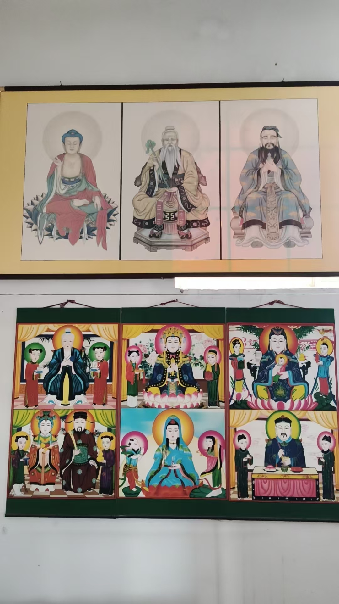
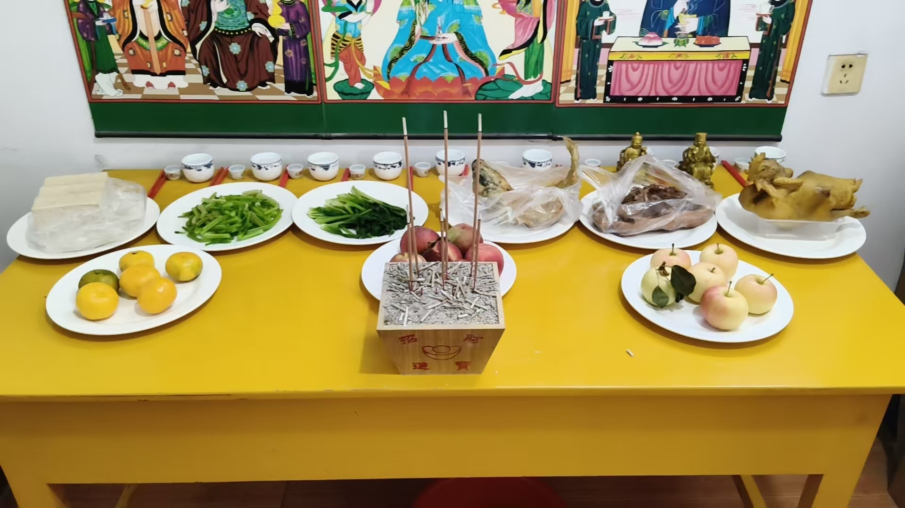
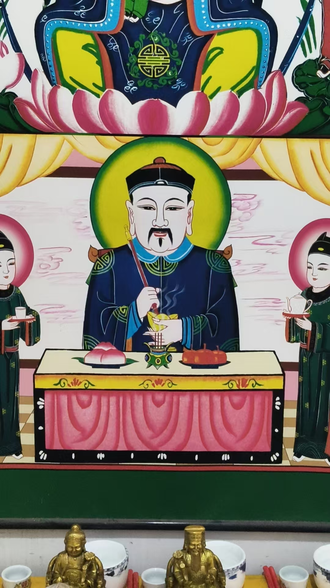
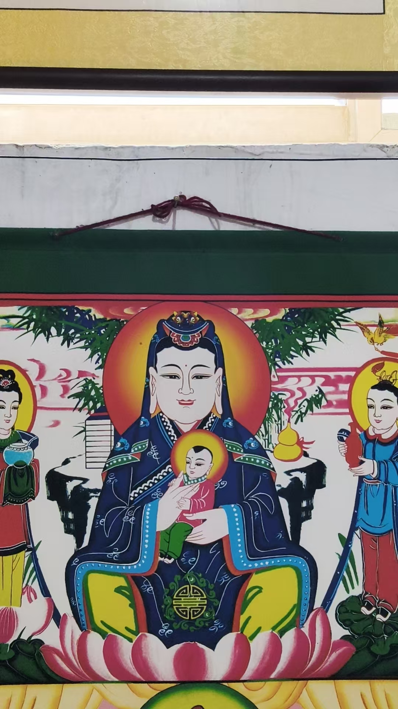
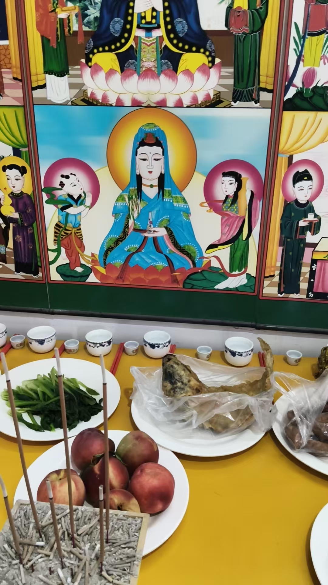
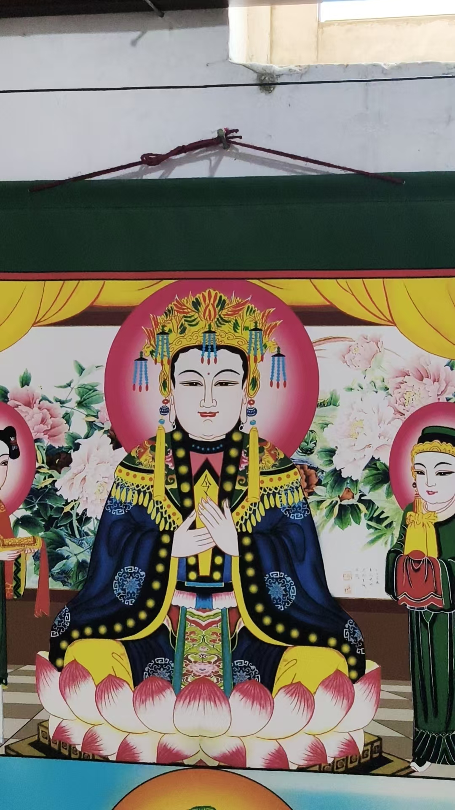

20260816给弟子安神坛
民间文化符咒术法风水布局 原始对话记录
给弟子安神坛
上面是三圣
花了一万二请画师画的
这种神坛，是敬仰坛，
不是顶仙的那种
这人婚姻不顺，第三次婚姻还出问题
是因为原来的神坛靠西墙了
我刚挪出来
东欺龙，西压虎
靠西墙，犯白虎
婚姻不利
解风水，就是解病，解命
这家人都是头里不舒服，西北角，乾位，就是头
调理好后，绝对解决问题


这是民俗家家供奉的保家主

家家供奉的护子观音

宝瓶观音
就是南海观音

泰山老母
旺宅法事，就在院子中间烧元宝
几个人都说，开始头里温热，后来变得清凉，清爽
这就是效果，立竿见影
以下为编者整理的主题文章
编者整理 · 主题文章
东欺龙，西压虎
导读：给弟子安神坛，上面是三圣，画是请画师画的。坛挪出来之前，靠着西墙。记录里说，东欺龙，西压虎，靠西墙就犯白虎，主婚姻不利。位置挪一挪，这一件事就了了。
给弟子安神坛。上面是三圣，花了一万二请画师画的。
这种神坛，是敬仰坛，不是顶仙的那种。
这人婚姻不顺，第三次婚姻还出问题。
原因是原来的神坛靠西墙了。我刚挪出来。
东欺龙，西压虎。靠西墙，犯白虎。婚姻不利。
一句话，位置就在那里。
他把话说得很大。解风水，就是解病，解命。
这家人都是头里不舒服，西北角，乾位，就是头。调理好后，绝对解决问题。
民俗里家家供奉的神像，他一页一页翻过去。
这是民俗家家供奉的保家主。家家供奉的护子观音。宝瓶观音，就是南海观音。泰山老母。
名字一个个报过去，都是平常人家堂上会有的那种。
最后是旺宅法事。就在院子中间烧元宝。
几个人都说，开始头里温热，后来变得清凉，清爽。
他说，这就是效果，立竿见影。
挪一个坛，报一串名字，烧一堆元宝。一天的事，就这些。
说明与免责：本站为民间修炼、民俗文化与传统文化资料的整理与记录，内容源自传承者口传与个人修习体会，仅供文化交流与研究参考，不构成医疗、健康、投资或任何功效承诺。所述内容属传统术数范畴，请理性看待；如身体不适，请及时就医。请遵守法律法规与公序良俗。